Universidad Tecnológica de México
Electricidad & Magnetismo
El origen del magnetismo
- Alumno
- Gutiérrez Alejo Hemmer Daniel
- Número de cuenta
- 3363742
- Materia
- Electricidad y Magnetismo
- Grupo
- TG04S
- Profesor
- Ing. Raymundo Romero Sales
- Fecha
- Noviembre 2026
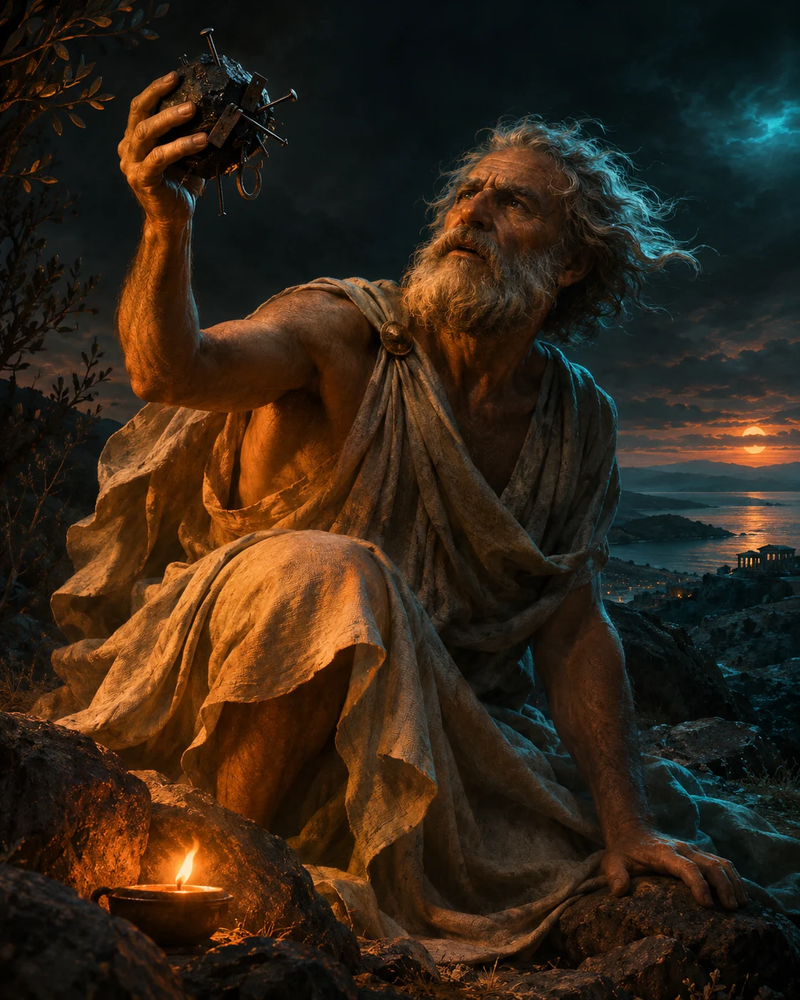
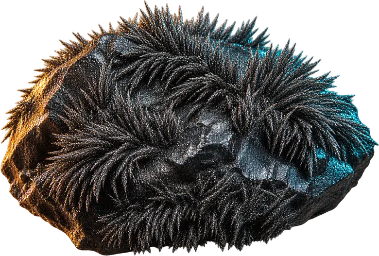
Tales de Mileto · ~600 a.C. · Magnesia
La piedra que atrae
La magnetita atrae al hierro sin tocarlo. De la región de Magnesia viene la palabra «magnetismo».
Acerca el cursor a la piedra
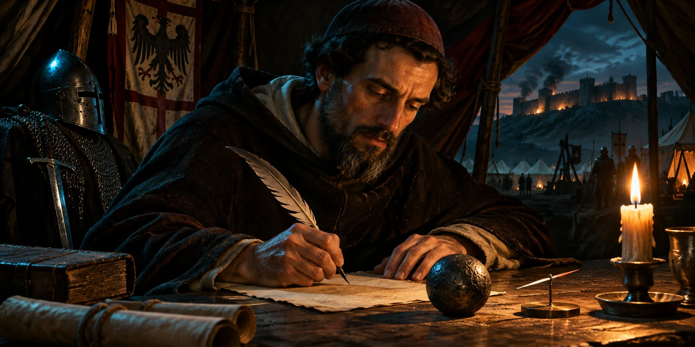
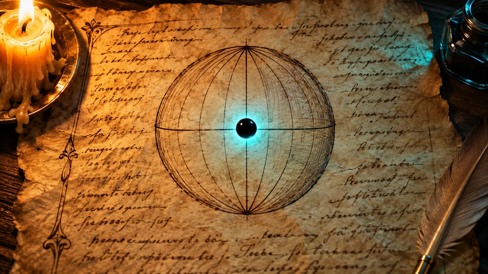
1269
Petrus Peregrinus · 1269 · Asedio de Lucera
La carta
En su Epistola de magnete describió por primera vez los polos norte y sur: cómo hallarlos, que los iguales se repelen y que, al romper un imán, cada trozo vuelve a tener dos polos.
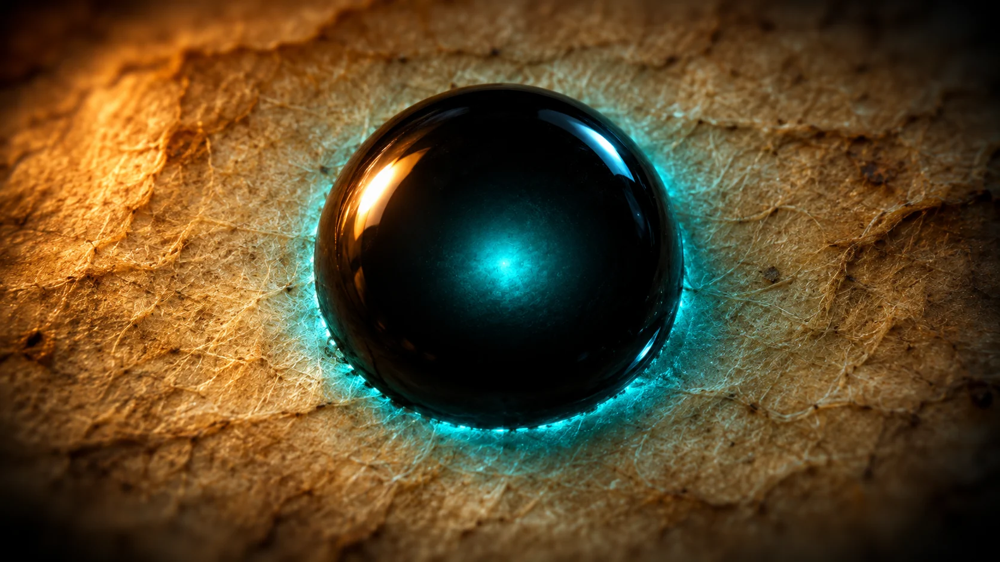
Uhlenbeck y Goudsmit · 1925 · Leiden
Origen del magnetismo
El magnetismo nace del electrón: de su movimiento orbital y, sobre todo, de su spin.
Momento magnético del electrón
Cada electrón es un pequeño imán
μB ≈ 9.274 × 10−24 J/T
¿Por qué casi nada es imán?
Pares que se cancelan
Los electrones van en pares con spins opuestos. En el hierro, el cobalto y el níquel quedan electrones desapareados, y la interacción de intercambio los alinea.
Dos electrones
Opuestos se cancelan; alineados se suman
Campo neto ≈ 0
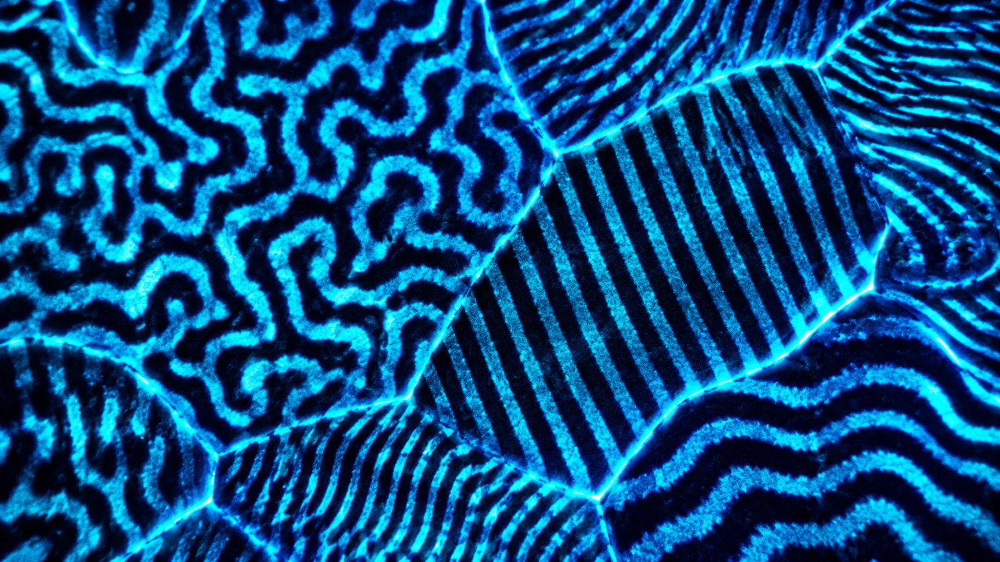
Pierre Weiss · 1907 · Zúrich
Dominios magnéticos
Los materiales se dividen en dominios. Sin imán externo apuntan en todas direcciones y se anulan.
Permanentes y temporales
Temporal: al alejar el imán, los dominios se desordenan.
Temperatura de Curie · Pierre Curie, 1895
Hierro ≈ 770 °C: pierde el ferromagnetismo
Campo magnético
- Michael Faraday · 1831 · LondresImaginó las líneas de fuerza.
- Hans C. Ørsted · 1820 · CopenhagueUna corriente eléctrica desvía una brújula.
- James C. Maxwell · 1865 · LondresUnificó electricidad y magnetismo.
Líneas de campo
Cuatro reglas
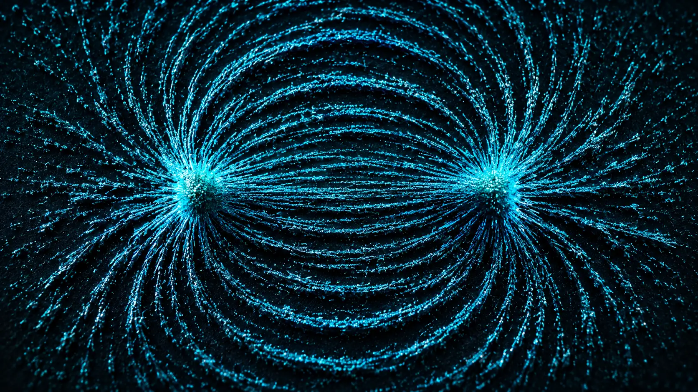
Arrastra la barra · gira desde el aro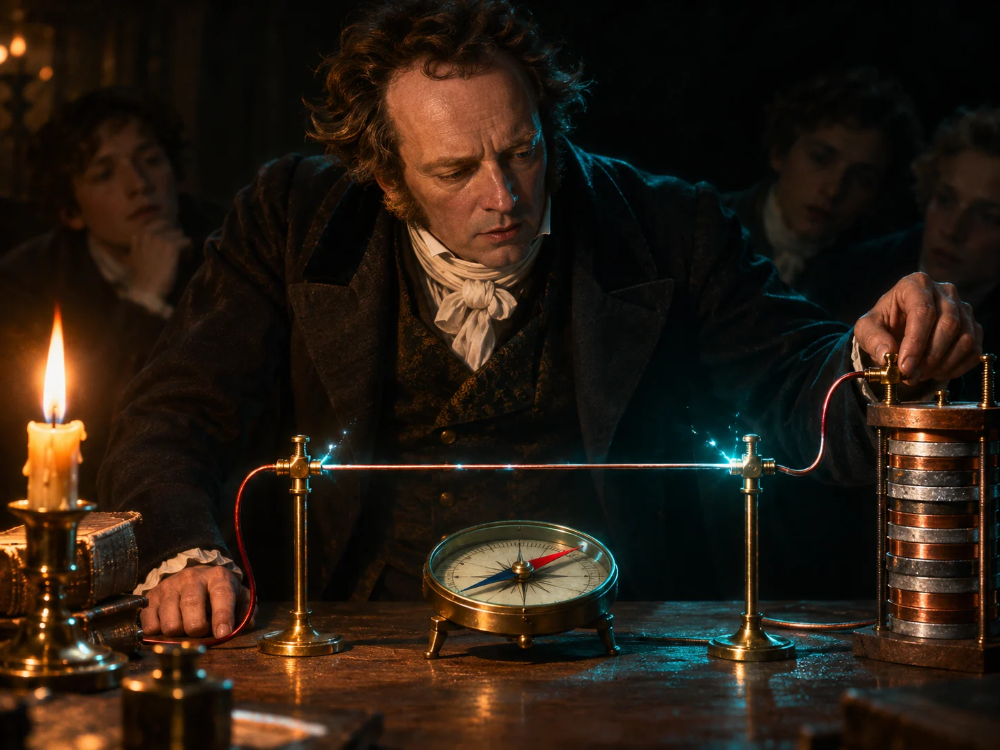
Hans C. Ørsted · 1820 · Copenhague
La corriente gira la brújula
¿Qué tan intenso?
Polos magnéticos
No existen monopolos
Cada trozo vuelve a tener su N y su S.
Iguales se repelen; opuestos se atraen.
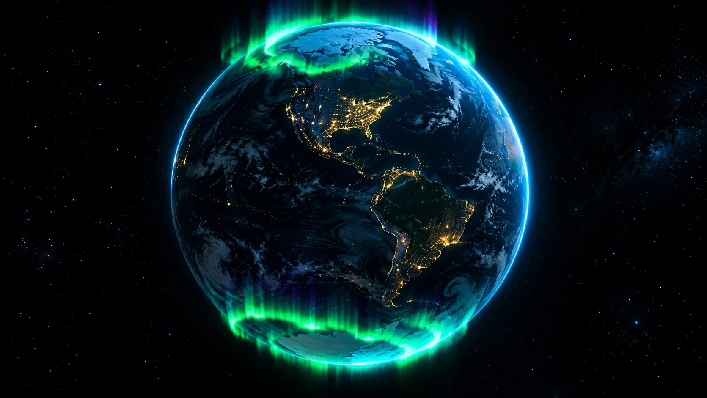
William Gilbert · 1600 · Londres
La Tierra es un imán gigante
Su polo norte geográfico es, en realidad, un polo sur magnético. Y los polos magnéticos se desplazan con el tiempo.
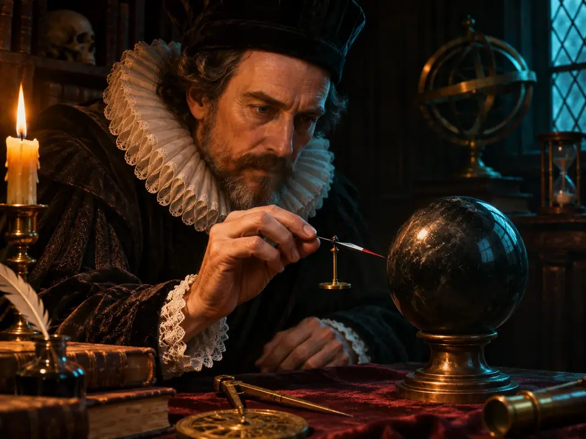
De Magnete · la terrella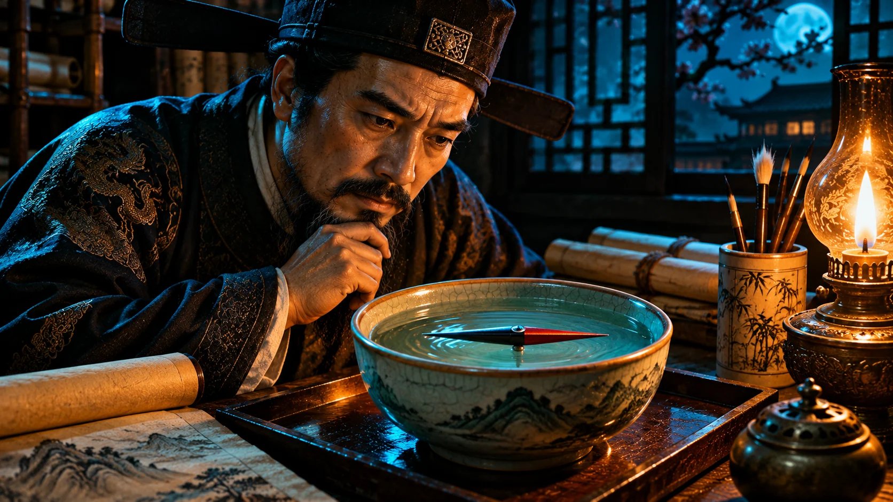
Shen Kuo · 1088 · Zhenjiang
La aguja que señala
Primera descripción clara de la brújula de aguja magnética y de la declinación magnética: la aguja no apunta exactamente al norte geográfico.
De la piedra al spin
Línea del tiempo
«Todo imán es, en el fondo, una multitud de electrones de acuerdo.»
Referencias · APA 7
- Gilbert, W. (1958). De magnete (P. F. Mottelay, Trad.). Dover. (Obra original publicada en 1600)
- Griffiths, D. J. (2017). Introduction to electrodynamics (4.ª ed.). Cambridge University Press.
- Maxwell, J. C. (1865). A dynamical theory of the electromagnetic field. Philosophical Transactions of the Royal Society of London, 155, 459–512.
- Peregrinus, P. (1904). The letter of Petrus Peregrinus on the magnet, A.D. 1269 (Brother Arnold, Trad.). McGraw Publishing Company.
- Serway, R. A., & Jewett, J. W. (2019). Physics for scientists and engineers (10.ª ed.). Cengage Learning.
- Uhlenbeck, G. E., & Goudsmit, S. (1925). Ersetzung der Hypothese vom unmechanischen Zwang durch eine Forderung bezüglich des inneren Verhaltens jedes einzelnen Elektrons. Die Naturwissenschaften, 13(47), 953–954.
- Weiss, P. (1907). L'hypothèse du champ moléculaire et la propriété ferromagnétique. Journal de Physique Théorique et Appliquée, 6(1), 661–690.